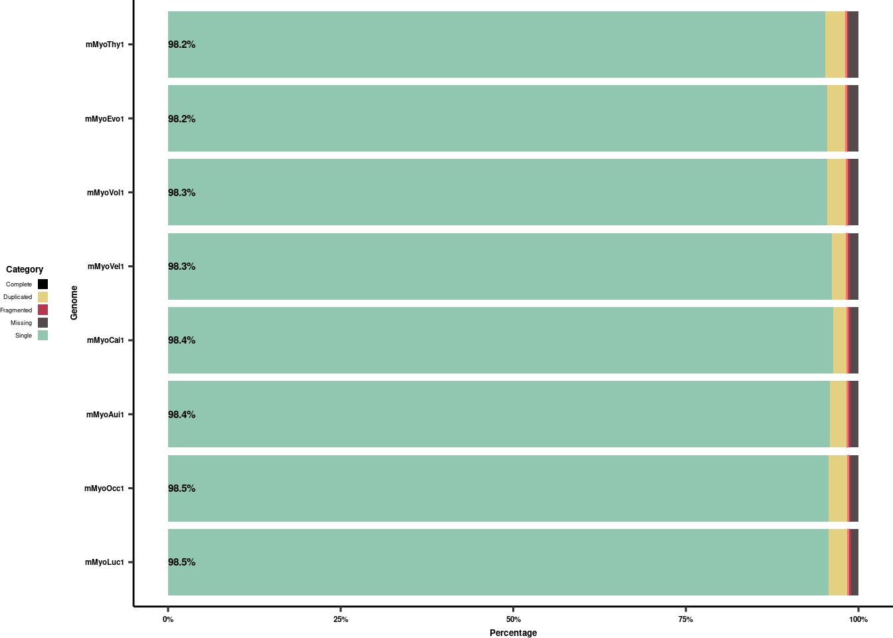

Figure 1 Sketchpad
docmanny
2023-05-05
Last updated: 2024-04-21
Checks: 6 1
Knit directory: R_workflowr/analysis/
This reproducible R Markdown analysis was created with workflowr (version 1.7.1). The Checks tab describes the reproducibility checks that were applied when the results were created. The Past versions tab lists the development history.
The R Markdown file has unstaged changes. To know which version of
the R Markdown file created these results, you’ll want to first commit
it to the Git repo. If you’re still working on the analysis, you can
ignore this warning. When you’re finished, you can run
wflow_publish to commit the R Markdown file and build the
HTML.
Great job! The global environment was empty. Objects defined in the global environment can affect the analysis in your R Markdown file in unknown ways. For reproduciblity it’s best to always run the code in an empty environment.
The command set.seed(20230501) was run prior to running
the code in the R Markdown file. Setting a seed ensures that any results
that rely on randomness, e.g. subsampling or permutations, are
reproducible.
Great job! Recording the operating system, R version, and package versions is critical for reproducibility.
Nice! There were no cached chunks for this analysis, so you can be confident that you successfully produced the results during this run.
Great job! Using relative paths to the files within your workflowr project makes it easier to run your code on other machines.
Great! You are using Git for version control. Tracking code development and connecting the code version to the results is critical for reproducibility.
The results in this page were generated with repository version 86b66d1. See the Past versions tab to see a history of the changes made to the R Markdown and HTML files.
Note that you need to be careful to ensure that all relevant files for
the analysis have been committed to Git prior to generating the results
(you can use wflow_publish or
wflow_git_commit). workflowr only checks the R Markdown
file, but you know if there are other scripts or data files that it
depends on. Below is the status of the Git repository when the results
were generated:
Ignored files:
Ignored: R_workflowr/.RData
Ignored: R_workflowr/.Rhistory
Ignored: R_workflowr/.Rproj.user/
Ignored: R_workflowr/data/ASTRALIII/
Ignored: R_workflowr/data/DBatVir/
Ignored: R_workflowr/data/GFFs/
Ignored: R_workflowr/data/USGS_Habitats/
Ignored: R_workflowr/data/USGS_SpeciesRanges/
Ignored: R_workflowr/data/UphamEtAl2019/
Ignored: R_workflowr/data/absrel_highlight/
Ignored: R_workflowr/data/assembly_stats/
Ignored: R_workflowr/data/geneLists/
Ignored: R_workflowr/data/genes/
Ignored: R_workflowr/data/genomes/
Ignored: R_workflowr/data/img/
Ignored: R_workflowr/data/lifehistory/
Ignored: R_workflowr/data/stableTraits/
Ignored: R_workflowr/data/target_BED/
Ignored: R_workflowr/data/timetree/
Ignored: R_workflowr/data/trees/
Ignored: R_workflowr/output/pubFiles/
Ignored: R_workflowr/output/webGestalt/
Ignored: R_workflowr/renv/library/
Ignored: R_workflowr/renv/staging/
Ignored: R_workflowr/test.phy
Ignored: analyses/phylo/output/
Ignored: data/GFFs/
Ignored: data/cross_cds_myotis_ali_evm_gff3_toga_gff3_files_20230622/
Ignored: data/seq/
Untracked files:
Untracked: R_workflowr/analysis/Cara_grant2_2.svg
Untracked: R_workflowr/analysis/Figure2.Rmd
Untracked: R_workflowr/analysis/Rplot.svg
Untracked: R_workflowr/analysis/Rplot01.svg
Untracked: R_workflowr/analysis/cara_Grant3.svg
Untracked: R_workflowr/analysis/cara_grant2.svg
Untracked: R_workflowr/analysis/cara_grant2_@.svg
Untracked: R_workflowr/analysis/cara_grant_1_1.svg
Untracked: R_workflowr/analysis/gene_copy_number.Rmd
Unstaged changes:
Modified: R_workflowr/analysis/Figure1.Rmd
Modified: R_workflowr/analysis/RICR.Rmd
Modified: R_workflowr/analysis/absrel.Rmd
Modified: R_workflowr/analysis/ng_curves.Rmd
Modified: R_workflowr/analysis/phylogeny.Rmd
Modified: R_workflowr/analysis/stabletraits.Rmd
Modified: R_workflowr/output/draft_figs/Draft_Figure1.pdf
Modified: R_workflowr/output/draft_figs/Myotis_size_life_LQ_upham.pdf
Modified: R_workflowr/output/subfigs/BUSCOs.pdf
Modified: R_workflowr/output/subfigs/Collection_map_CAAZNV.pdf
Modified: R_workflowr/output/subfigs/phylo_auNG_circ_col.pdf
Modified: R_workflowr/output/subfigs/phylo_auNG_circ_col.png
Modified: R_workflowr/output/subfigs/phylo_auNG_circ_col.svg
Modified: R_workflowr/output/subfigs/phylo_auNG_circ_col_withLine.pdf
Note that any generated files, e.g. HTML, png, CSS, etc., are not included in this status report because it is ok for generated content to have uncommitted changes.
These are the previous versions of the repository in which changes were
made to the R Markdown (R_workflowr/analysis/Figure1.Rmd)
and HTML (R_workflowr/docs/Figure1.html) files. If you’ve
configured a remote Git repository (see ?wflow_git_remote),
click on the hyperlinks in the table below to view the files as they
were in that past version.
| File | Version | Author | Date | Message |
|---|---|---|---|---|
| Rmd | 8f66d05 | docmanny | 2023-12-21 | clean version of Fig 1, now with LQ |
| html | 8f66d05 | docmanny | 2023-12-21 | clean version of Fig 1, now with LQ |
| Rmd | 3d9fd9c | docmanny | 2023-12-15 | draft sub figs for F1&2 |
| Rmd | 0408a6b | docmanny | 2023-05-09 | Figure 1 work |
| html | 0408a6b | docmanny | 2023-05-09 | Figure 1 work |
Candidate Subplots
Figure 1a: State of the bat sequencing union
Assembly Stats
Table
Notes about the tree
In order to get TimeTree to play nicely with the phylogeny, a few changes were needed: - Murina aurata feae (replaced with Murina aurata) - Pteropus pselaphon (replaced with Pteropus mariannus) - Miniopterus schreibersii (replace with Miniopterus schreibersii orianae) - Myotis occultus (replaced with Myotis lucifugus lucifugus) - Myotis lucifugus (replaced with Myotis lucifugus carissima) - Hipposideros pendleburyi (replaced with Hipposideros turpis) - TimetreeV5 has split Eptesicus and broken its nomenclature/link to NCBI, so you can’t find “Eptesicus fuscus” anymore. Instead, you have to look for all of Chiroptera or Vespertilliodinae and then look for Eptesicus fuscus hispaniolae.
If you do all these changes, then undo the changes in post, you get this tree. Note that it was very annoying to splice the two trees together by eye so avoid needing to redo this.
NGx curves
auNG
Tree plus auNG
Updated Phylo
tr.cancerSucceptibility <- treeio::read.beast('../output/Upham2019_newChiroptera-RICR-Data.nexus')
tr.cancerSucceptibility@data <- tr.cancerSucceptibility@data %>%
mutate_at(vars(-label.y, -node,-Ancestor),as.numeric)
lq <- read_tsv('../data/lifehistory/manny_mammal_agedata_harmonized.withLQ_hasAli_hasNTiles_withRICR.tsv') %>%
select(label, LQ, lifespan) %>%
filter(label %in% tr.genomes$tip.label)Rows: 106 Columns: 15
── Column specification ────────────────────────────────────────────────────────
Delimiter: "\t"
chr (2): label, Order
dbl (12): size, lifespan, predLife, LQ, decile, septile, quintile, quartile,...
lgl (1): has.ali
ℹ Use `spec()` to retrieve the full column specification for this data.
ℹ Specify the column types or set `show_col_types = FALSE` to quiet this message.node.chiroptera = MRCA(tr.cancerSucceptibility, 'Myotis_lucifugus', 'Pteropus_vampyrus')
tipnode.chiroptera = offspring(tr.cancerSucceptibility, node.chiroptera, type='tips')
tips.chiroptera = tr.cancerSucceptibility %>% as_tibble %>% filter(node %in% tipnode.chiroptera) %>% pull(label) %>% intersect(., auNG.fancy.color$label)! # Invaild edge matrix for <phylo>. A <tbl_df> is returned.tips.other = tr.cancerSucceptibility %>% as_tibble %>% filter(label %in% c('Homo_sapiens', 'Mus_musculus','Bos_taurus')) %>% pull(label)! # Invaild edge matrix for <phylo>. A <tbl_df> is returned.tr.genomes.lq <- tr.cancerSucceptibility %>% tidytree::keep.tip(c(tips.chiroptera, tips.other))ℹ invalid tbl_tree object. Missing column: parent.
ℹ invalid tbl_tree object. Missing column: parent.
ℹ invalid tbl_tree object. Missing column: parent.
ℹ invalid tbl_tree object. Missing column: parent.
! # Invaild edge matrix for <phylo>. A <tbl_df> is returned.p.trNew.auNG.circ.altcolor.lq <-
tr.genomes.lq %>%
ggtree(
aes(color=LQ.median),
layout = "fan",
open.angle=180,
branch.length = 'none'
) +
scale_color_viridis_c(
'Longevity Quotient', option='D',na.value = 'black',
guide=guide_colorbar(title.position='top', title.hjust = 0.5,
title.theme = element_text(face='bold', hjust = 0.5, size=5))
) +
ggnewscale::new_scale_color() +
geom_fruit(
data = auNG.fancy.color,
geom = geom_col,
mapping=aes(
y= label,
x = log(auNG),
color=color_me,
fill=color_me
),
# color=NA,
orientation = 'y',
width = .6
) +
geom_fruit(
data = auNG.fancy.color,
geom = geom_richtext,
mapping = aes(
y=label,
label=label_fancy,
color=color_me,
angle=sapply(angle,angle_rotate),
hjust=sapply(angle,h_readjust)
),
fill = NA,
label.color = NA,
fontface='italic',
size=5/.pt,
# offset=0.2,
label.padding = unit(rep(0,4), "pt"),
) +
# ) +
scale_color_manual("Origin", values = species_color, guide="none") +
scale_fill_manual("Origin", values = species_color, guide="none") #+Scale for y is already present.
Adding another scale for y, which will replace the existing scale.
ℹ invalid tbl_tree object. Missing column: parent,node.
ℹ invalid tbl_tree object. Missing column: parent,node.
ℹ invalid tbl_tree object. Missing column: parent,node.
ℹ invalid tbl_tree object. Missing column: parent,node. # theme(plot.margin = unit(c(0.3,0.5,0,0.5),"in"))p.trNew.auNG.circ.altcolor.life <-
tr.genomes.lq %>%
ggtree(
aes(color=lnLife.median),
layout = "fan",
open.angle=180,
branch.length = 'none'
) +
scale_color_viridis_c(
'Log Lifespan', option='D',na.value = 'black',
# na.value="#fde725ff",
guide=guide_colorbar(title.position='top', title.hjust = 0.5,
title.theme = element_text(face='bold', hjust = 0.5, size=5))
) +
ggnewscale::new_scale_color() +
geom_fruit(
data = auNG.fancy.color,
geom = geom_col,
mapping=aes(
y= label,
x = log(auNG),
color=color_me,
fill=color_me
),
# color=NA,
orientation = 'y',
width = .6
) +
geom_fruit(
data = auNG.fancy.color,
geom = geom_richtext,
mapping = aes(
y=label,
label=label_fancy,
color=color_me,
angle=sapply(angle,angle_rotate),
hjust=sapply(angle,h_readjust)
),
fill = NA,
label.color = NA,
fontface='italic',
size=5/.pt,
# offset=0.2,
label.padding = unit(rep(0,4), "pt"),
) +
# ) +
scale_color_manual("Origin", values = species_color, guide="none") +
scale_fill_manual("Origin", values = species_color, guide="none") #+Scale for y is already present.
Adding another scale for y, which will replace the existing scale.
ℹ invalid tbl_tree object. Missing column: parent,node.
ℹ invalid tbl_tree object. Missing column: parent,node.
ℹ invalid tbl_tree object. Missing column: parent,node.
ℹ invalid tbl_tree object. Missing column: parent,node. # theme(plot.margin = unit(c(0.3,0.5,0,0.5),"in"))p.trNew.auNG.circ.altcolor.ricr <-
tr.genomes.lq %>%
ggtree(
aes(color=log2CancerSucceptabilityChange),
layout = "fan",
open.angle=180,
branch.length = 'none'
) +
scale_color_viridis_c(
'Relative Cancer Risk', option='D',na.value = 'black',
guide=guide_colorbar(title.position='top', title.hjust = 0.5,
title.theme = element_text(face='bold', hjust = 0.5, size=5))
) +
ggnewscale::new_scale_color() +
geom_fruit(
data = auNG.fancy.color,
geom = geom_col,
mapping=aes(
y= label,
x = log(auNG),
color=color_me,
fill=color_me
),
# color=NA,
orientation = 'y',
width = .6
) +
geom_fruit(
data = auNG.fancy.color,
geom = geom_richtext,
mapping = aes(
y=label,
label=label_fancy,
color=color_me,
angle=sapply(angle,angle_rotate),
hjust=sapply(angle,h_readjust)
),
fill = NA,
label.color = NA,
fontface='italic',
size=5/.pt,
# offset=0.2,
label.padding = unit(rep(0,4), "pt"),
) +
# ) +
scale_color_manual("Origin", values = species_color, guide="none") +
scale_fill_manual("Origin", values = species_color, guide="none") #+Scale for y is already present.
Adding another scale for y, which will replace the existing scale.
ℹ invalid tbl_tree object. Missing column: parent,node.
ℹ invalid tbl_tree object. Missing column: parent,node.
ℹ invalid tbl_tree object. Missing column: parent,node.
ℹ invalid tbl_tree object. Missing column: parent,node. # theme(plot.margin = unit(c(0.3,0.5,0,0.5),"in"))t2t.base = p.trNew.auNG.circ.altcolor.life$data %>% filter(label == 'Homo_sapiens') %>% pull(x)! # Invaild edge matrix for <phylo>. A <tbl_df> is returned.
! # Invaild edge matrix for <phylo>. A <tbl_df> is returned.t2t.bartop = p.trNew.auNG.circ.altcolor.life$layers[[3]]$data %>% filter(label == 'Homo_sapiens') %>% pull(new_xtmp) +0.6#+ p.trNew.auNG.circ.altcolor$layers[[3]]$data %>% filter(label == 'Homo_sapiens') %>% pull(x)
t2t.start = min(p.trNew.auNG.circ.altcolor.life$data$y)
t2t.end = max(p.trNew.auNG.circ.altcolor.life$data$y)
f1a <- p.trNew.auNG.circ.altcolor.life +
geom_segment(
aes(
x = t2t.base + t2t.bartop,
xend = t2t.base + t2t.bartop,
y = t2t.start,
yend = t2t.end
),
linewidth=0.1,
# lty='dashed'
) +
theme_void() +
theme(
text=element_text(
family='Helvetica',
size=5
),
plot.background = element_blank(),
legend.background = element_blank(),
legend.position = c(0.5,0.45),
legend.key.width = unit(0.2, 'in'),
legend.key.height = unit(0.1, 'in'),
legend.direction = 'horizontal',
legend.box.margin = margin(0,0,0,0, unit='in'),
# legend.title = element_text(face='bold', hjust = 0.5, size=1)
)
draw(f1a, x_in = 7, y_in = 4)
f1a %>%
ggsave(plot = ., "../output/subfigs/phylo_auNG_circ_col.pdf")Saving 7 x 5 in imagef1a %>%
ggsave(plot = ., "../output/subfigs/phylo_auNG_circ_col.svg")Saving 7 x 5 in imagef1a %>%
ggsave(plot = ., "../output/subfigs/phylo_auNG_circ_col.png")Saving 7 x 5 in imageFigure 1b: Collection Sites
datasheet.known.noYum <-
datasheet.known %>%
filter(species != "Myotis yumanensis")
f1b <- ggplot() +
geom_sf(
data= caaznv,
color = "#ABB0B8",
fill = "#6F7378",
size = 0.1
) +
geom_spatial_point(
data= datasheet.known.noYum %>% filter(!species %in% c('Myotis auriculus', 'Myotis volans')),
aes(
x=Longitude,
y=Lattitude,
group=species,
color=species
),
size=2.5
) +
geom_spatial_point(
data= datasheet.known.noYum %>% filter(species == 'Myotis auriculus'),
aes(
x=Longitude,
y=Lattitude,
group=species,
color=species
),
size=2.5,
shape="\u25D7"
) +
geom_spatial_point(
data= datasheet.known.noYum %>% filter(species == 'Myotis volans'),
aes(
x=Longitude,
y=Lattitude,
group=species,
color=species
),
size=2.5,
shape='\u25D6',
position=position_nudge(x=-0.4, y=0.02)
) +
geom_spatial_label(
data= datasheet.known.noYum %>% filter(species == 'Myotis lucifugus'),
aes(label=species, group=species, y=Lattitude, x=Longitude, fill=species,
),
show.legend=F, color='black', size=2, family='Helvetica', fontface='bold.italic',
nudge_x=8.5,
nudge_y=1
) +
geom_spatial_label(
data= datasheet.known.noYum %>% filter(species == 'Myotis californicus'),
aes(label=species, group=species, y=Lattitude, x=Longitude, fill=species,
),
show.legend=F, color='black', size=2, family='Helvetica', fontface='bold.italic',
nudge_x=8,
nudge_y=2
) +
geom_spatial_label(
data= datasheet.known.noYum %>% filter(species == 'Myotis occultus'),
aes(label=species %>% str_pad(width = str_length('Myotis auriculus')-1,side = 'both'),
group=species, y=Lattitude, x=Longitude, fill=species,
),
show.legend=F, color='black', size=2, family='Helvetica', fontface='bold.italic',
nudge_x=-8.75,
nudge_y=1.17
) +
geom_spatial_label(
data= datasheet.known.noYum %>% filter(species == 'Myotis velifer'),
aes(label=species %>% str_pad(width = str_length('Myotis auriculus')+1,side = 'both'),
group=species, y=Lattitude, x=Longitude, fill=species,
),
show.legend=F, color='black', size=2, family='Helvetica', fontface='bold.italic',
nudge_x=-9.4,
nudge_y=2.4
) +
geom_spatial_label(
data= datasheet.known.noYum %>% filter(species == 'Myotis volans'),
aes(label=species %>% str_pad(width = str_length('Myotis auriculus'),side = 'both'),
group=species, y=Lattitude, x=Longitude, fill=species,
),
show.legend=F, size=2, color='black', size=2, family='Helvetica', fontface='bold.italic',
nudge_x=-11.4,
nudge_y=1.3
) +
geom_spatial_label(
data= datasheet.known.noYum %>% filter(species == 'Myotis auriculus'),
aes(label=species %>% str_pad(width = str_length('Myotis auriculus')),
group=species, y=Lattitude, x=Longitude, fill=species,
),
show.legend=F, size=2, color='black', size=2, family='Helvetica', fontface='bold.italic',
nudge_x=-11.5,
nudge_y=-0.25
) +
scale_color_manual(
values = species_color %>%
set_names(
.,
names(.) %>%
str_replace_all("_", " ")
)
) +
scale_fill_manual(
values = species_color %>%
set_names(., names(.) %>% str_replace_all("_", " "))
) +
theme_pubr() +
labs_pubr() +
coord_sf(clip = 'off') +
theme(
legend.position = "none",
text=element_text(
family='Helvetica',
size=5
),
plot.background = element_blank(),
plot.margin = margin(0,0.0,0,0.0,unit='in'),
)Warning: Duplicated aesthetics after name standardisation: size
Duplicated aesthetics after name standardisation: sizedraw(f1b, x_in = 2, y_in = 2)Assuming `crs = 4326` in stat_spatial_identity()
Assuming `crs = 4326` in stat_spatial_identity()
Assuming `crs = 4326` in stat_spatial_identity()
Assuming `crs = 4326` in stat_spatial_identity()
Assuming `crs = 4326` in stat_spatial_identity()
Assuming `crs = 4326` in stat_spatial_identity()
Assuming `crs = 4326` in stat_spatial_identity()
Assuming `crs = 4326` in stat_spatial_identity()
Assuming `crs = 4326` in stat_spatial_identity()
p.map.collections.caaznv %>%
ggsave(plot = ., "../output/subfigs/Collection_map_CAAZNV.pdf")Saving 7 x 5 in image
Assuming `crs = 4326` in stat_spatial_identity()
Assuming `crs = 4326` in stat_spatial_identity()p.map.collections.caaznv %>%
ggsave(plot = ., "../output/subfigs/Collection_map_CAAZNV.svg")Saving 7 x 5 in image
Assuming `crs = 4326` in stat_spatial_identity()
Assuming `crs = 4326` in stat_spatial_identity()p.map.collections.caaznv %>%
ggsave(plot = ., "../output/subfigs/Collection_map_CAAZNV.png")Saving 7 x 5 in image
Assuming `crs = 4326` in stat_spatial_identity()
Assuming `crs = 4326` in stat_spatial_identity()Figure 1C: BUSCOs
Introduction
BUSCO
Annotation Graphs
f1c <- busco %>%
filter(!name %in% c("N", "Complete")) %>%
filter(Genome != 'mMyoYum1') %>%
ggplot(
aes(
x = Genome,
fill = name,
y = value
)
) +
geom_bar(position="stack", stat = "identity") +
geom_text(
data = busco %>% filter(name == "Complete") %>%
filter(Genome != 'mMyoYum1'),
mapping = aes(label=value %>% str_c(., "%"), y=0),
hjust=0,
family='Helvetica',
fontface='bold',
size=2
) +
geom_errorbar(
data = busco %>% filter(name == "Complete") %>%
filter(Genome != 'mMyoYum1'),
mapping = aes(
x = Genome,
color=name,
y=value,
ymin=value,
ymax=value
),
stat= 'identity',
fill=NA,
inherit.aes = F,
show.legend = F
) +
scale_fill_manual(
"Category", values = col.busco,
guide=guide_legend(
direction = 'vertical',
title.position='top',
title.vjust = 0.5,
title.theme = element_text(
face='bold',
hjust = 0.5,
size=5
),
# nrow = 2,
# ncol=3,
label.position = 'left'
)
) +
scale_y_continuous("Percentage", labels = scales::percent_format(scale = 1, accuracy=1)) +
coord_flip() +
theme_pubr() +
labs_pubr() +
theme(
text=element_text(
family='Helvetica',
size=5
),
plot.margin = margin(0,0.0,0,0.0,unit='in'),
plot.background = element_blank(),
legend.background = element_blank(),
legend.position = 'left',
# legend.position = c(0,-0.5),
legend.key.width = unit(0.1, 'in'),
legend.key.height = unit(0.1, 'in'),
legend.margin = margin(0,0,0,0, unit='in'),
legend.justification = 'right'
)Warning in geom_errorbar(data = busco %>% filter(name == "Complete") %>% :
Ignoring unknown parameters: `fill`f1c
| Version | Author | Date |
|---|---|---|
| 8f66d05 | docmanny | 2023-12-21 |
p.busco %>%
ggsave(plot = ., "../output/subfigs/BUSCOs.pdf")Saving 7 x 5 in imagep.busco %>%
ggsave(plot = ., "../output/subfigs/BUSCOs.svg")Saving 7 x 5 in imagep.busco %>%
ggsave(plot = ., "../output/subfigs/BUSCOs.png")Saving 7 x 5 in imageFigure 1D: Chromosome completeness
completion_status = readxl::read_xlsx('../data/SupplementTable1_GenomeStats.xlsx', sheet='GapsAndScaffold')
chr_naming = tibble(
Scaffold = c(1, 2, 3, 5, 6, 7, 8, 9, 10,
11, 12, 13, 14, 15, 16, 17, 18, 19, 20,
21, 22, 4, 23),
chr = c("1/2", "3/4", "5/6", "7", "8", "9", "10", "11", "12",
"13", "14", "15/16", "17", "18", "19", "20", "21", "22", "23",
"24", "25", "X", "Y") %>% factor(., levels=.),
size = c(2, 2, 2, 1, 1, 1, 1, 1, 1,
1, 1, 1, 1, 1, 1, 1, 1, 0.5, 0.5,
0.5, 0.5, 2, 0.5)
)
pc.complete.chr <- completion_status %>%
filter(Genome != "mMyoYum1") %>%
left_join(chr_naming) %>%
group_by(chr, size) %>%
summarise(
n = n(),
n.Complete = sum(Complete == "Complete"),
n.Fragmented = sum(Complete == "Frac"),
n.Gap = sum(Complete == "Gap"),
pc.Complete = n.Complete/n,
pc.Fragmented = n.Fragmented/n,
pc.Gap = n.Gap/n
) %>%
arrange(chr) %>%
ungroup %>%
group_by(chr, size, n) %>%
pivot_longer(c(n.Complete, n.Fragmented, n.Gap, pc.Complete, pc.Fragmented, pc.Gap))Joining with `by = join_by(Scaffold)`
`summarise()` has grouped output by 'chr'. You can override using the `.groups`
argument.f1d <- pc.complete.chr %>%
filter(
str_starts(name, 'pc.')
) %>%
mutate(name=name %>% str_remove('pc.')) %>%
ggplot(
aes(
x = chr,
y = value*size,
fill=name
)
) +
geom_chicklet(width = 1) +
geom_text(
data = . %>% filter(name == "Complete"),
aes(
y=size,
label = value %>% scales::label_percent()(.)
),
vjust=1,
size=2,
fontface='bold'
) +
xlab("Chr") +
labs_pubr() +
theme_void() +
scale_y_continuous(
# expand=c(0,0.1)
expand=c(0,0)
)+
scale_fill_manual(
"Status",
labels = c(
Complete = "T2T",
Fragmented = "1T",
Gap = "Near-T2T (1 gap)"
),
values=c(
Complete = '#332288',
Fragmented = "#882255",
Gap = "#FEA82F"
)
) +
theme(
axis.text.x = element_text(size=8, angle=-45, vjust=0),
legend.position = 'bottom',
legend.title = element_text(size=8),
legend.text = element_text(size=5),
axis.title.x = element_text(size=5, face='bold')
)
pc.complete.genome <- completion_status %>%
filter(Genome != "mMyoYum1") %>%
group_by(Genome) %>%
summarise(
n = n(),
n.Complete = sum(Complete == "Complete"),
n.Fragmented = sum(Complete == "Frac"),
n.Gap = sum(Complete == "Gap"),
pc.Complete = n.Complete/n,
pc.Fragmented = n.Fragmented/n,
pc.Gap = n.Gap/n
) %>%
pivot_longer(c(n.Complete, n.Fragmented, n.Gap, pc.Complete, pc.Fragmented, pc.Gap))
f1d2 <- pc.complete.genome %>%
filter(
str_starts(name, 'pc.'),
Genome != 'mMyoYum1'
) %>%
mutate(name=name %>% str_remove('pc.')) %>%
ggplot(
aes(
x = 0,
y = value,
fill=name
)
) +
geom_bar(stat='identity') +
geom_text(
aes(
label = value %>% round(digits = 2) %>% scales::label_percent()(.)
),
fontface='bold',
size=1,
position = position_stack(vjust = 0.5),
) +
labs_pubr() +
theme_void() +
scale_fill_manual(
"Status",
values=c(
Complete = '#332288',
Fragmented = "#882255",
Gap = "#FEA82F"
)
) +
coord_polar(theta='y',clip = 'off') +
facet_wrap(~Genome, nrow = 1, ncol=8) +
theme(
strip.text = element_text(size=5, face = 'bold'),
legend.position = 'none'
)Figure 1:
Version 1: using grid graphics
vp.f1 <- viewport(
x=unit(0,'in'),
y=unit(0,'in'),
just = c("left", "bottom"),
name = "Fig1",
width = unit(5, 'in'),
height = unit(4, 'in'),
)
f1.blank <- rectGrob(
x=unit(0,'in'),
y=unit(0,'in'),
width = unit(5, 'in'),
height = unit(4, 'in'),
just = c("left", "bottom"),
gp = gpar(color='white', fill='white')
)
inset.f1a <- viewport(
name="f1a",
x = unit(0, 'in'),
y = unit(0, 'in'),
just = c("left", "bottom"),
width = unit(5, 'in'),
height = unit(4, 'in')
)
inset.f1b <- viewport(
name="f1b",
x = unit(0, 'in'),
y = unit(-0.15, 'in'),
just = c("left", "bottom"),
width = unit(2.1, 'in'),
height = unit(2.1, 'in')
)
inset.f1c <- viewport(
name="f1c",
x = unit(2.14, 'in'),
y = unit(0, 'in'),
just = c("left", "bottom"),
width = unit(2.85, 'in'),
height = unit(1.8, 'in')
)
lab.A <- grid.text(
name = 'labA',
label= 'A',
x = unit(0, 'in'),
y = unit(4, 'in'),
just = c("left", "top"),
gp = gpar(
fontsize = 10,
fontfamily = 'Helvetica',
fontface = 'bold'
)
)
lab.B <- grid.text(
name = 'labB',
label= 'B',
x = unit(0, 'in'),
y = unit(1.95, 'in'),
just = c("left", "top"),
gp = gpar(
fontsize = 10,
fontfamily = 'Helvetica',
fontface = 'bold'
)
)
lab.C <- grid.text(
name = 'labC',
label= 'C',
x = unit(3.1, 'in'),
y = unit(1.95, 'in'),
just = c("left", "top"),
gp = gpar(
fontsize = 10,
fontfamily = 'Helvetica',
fontface = 'bold'
)
)
| Version | Author | Date |
|---|---|---|
| 8f66d05 | docmanny | 2023-12-21 |
cairo_pdf('../output/draft_figs/Draft_Figure1.pdf',width = 5, height = 4, onefile = T)
# f1 <- grid.grabExpr({
grid.newpage()
vp_all <- vpTree(inset.f1a, vpList(inset.f1b, inset.f1c))
pushViewport(vp_all)
seekViewport('f1a')
grid.draw(f1.blank)
grid.draw(ggplotGrob(f1a+theme(plot.margin = margin(0.4,0.1,0.5,0,unit='in'))))
grid.draw(lab.A)
grid.draw(lab.B)
grid.draw(lab.C)
seekViewport('f1b')
grid.draw(ggplotGrob(f1b))Assuming `crs = 4326` in stat_spatial_identity()
Assuming `crs = 4326` in stat_spatial_identity()
Assuming `crs = 4326` in stat_spatial_identity()
Assuming `crs = 4326` in stat_spatial_identity()
Assuming `crs = 4326` in stat_spatial_identity()
Assuming `crs = 4326` in stat_spatial_identity()
Assuming `crs = 4326` in stat_spatial_identity()
Assuming `crs = 4326` in stat_spatial_identity()
Assuming `crs = 4326` in stat_spatial_identity()seekViewport('f1c')
grid.draw(ggplotGrob(f1c))
upViewport()
# })
# grid.newpage()
# grid.draw(f1)
dev.off()png
2 Version 2: with F1D
Version 1: using grid graphics
vp.f1 <- viewport(
x=unit(0,'in'),
y=unit(0,'in'),
just = c("left", "bottom"),
name = "Fig1",
width = unit(5, 'in'),
height = unit(6, 'in'),
)
f1.blank <- rectGrob(
x=unit(0,'in'),
y=unit(0,'in'),
width = unit(5, 'in'),
height = unit(6, 'in'),
just = c("left", "bottom"),
gp = gpar(color='white', fill='white')
)
inset.f1a <- viewport(
name="f1a",
x = unit(0, 'in'),
y = unit(0, 'in'),
just = c("left", "bottom"),
width = unit(5, 'in'),
height = unit(6, 'in')
)
inset.f1b <- viewport(
name="f1b",
x = unit(0, 'in'),
# y = unit(-0.15, 'in'),
y = unit(1.85, 'in'),
just = c("left", "bottom"),
width = unit(2.1, 'in'),
height = unit(2.1, 'in')
)
inset.f1c <- viewport(
name="f1c",
x = unit(2.14, 'in'),
y = unit(2, 'in'),
just = c("left", "bottom"),
width = unit(2.85, 'in'),
height = unit(1.8, 'in')
)
inset.f1d <- viewport(
name="f1d",
x = unit(0, 'in'),
y = unit(0, 'in'),
just = c("left", "bottom"),
width = unit(5, 'in'),
height = unit(2, 'in')
)
inset.f1d2 <- viewport(
name="f1d2",
x = unit(1, 'in'),
y = unit(1.25, 'in'),
just = c("left", "bottom"),
width = unit(3, 'in'),
height = unit(1, 'in')
)
lab.A <- grid.text(
name = 'labA',
label= 'A',
x = unit(0, 'in'),
y = unit(6, 'in'),
just = c("left", "top"),
gp = gpar(
fontsize = 10,
fontfamily = 'Helvetica',
fontface = 'bold'
)
)
lab.B <- grid.text(
name = 'labB',
label= 'B',
x = unit(0, 'in'),
y = unit(3.95, 'in'),
just = c("left", "top"),
gp = gpar(
fontsize = 10,
fontfamily = 'Helvetica',
fontface = 'bold'
)
)
lab.C <- grid.text(
name = 'labC',
label= 'C',
x = unit(3.1, 'in'),
y = unit(3.95, 'in'),
just = c("left", "top"),
gp = gpar(
fontsize = 10,
fontfamily = 'Helvetica',
fontface = 'bold'
)
)
lab.D <- grid.text(
name = 'labD',
label= 'D',
x = unit(0, 'in'),
y = unit(2, 'in'),
just = c("left", "bottom"),
gp = gpar(
fontsize = 10,
fontfamily = 'Helvetica',
fontface = 'bold'
)
)
cairo_pdf('../output/draft_figs/Draft_Figure1.pdf',width = 5, height = 6, onefile = T)
# png('../output/draft_figs/Draft_Figure1.png',width = 5, height = 6, units = 'in', res = 300)
# f1 <- grid.grabExpr({
grid.newpage()
vp_all <- vpTree(inset.f1a, vpList(inset.f1b, inset.f1c, inset.f1d, inset.f1d2))
pushViewport(vp_all)
seekViewport('f1a')
grid.draw(f1.blank)
grid.draw(ggplotGrob(f1a+theme(plot.margin = margin(0.5,0.1,2.5,0.1,unit='in'))))
grid.draw(lab.A)
grid.draw(lab.B)
grid.draw(lab.C)
grid.draw(lab.D)
seekViewport('f1b')
grid.draw(ggplotGrob(f1b))Assuming `crs = 4326` in stat_spatial_identity()
Assuming `crs = 4326` in stat_spatial_identity()
Assuming `crs = 4326` in stat_spatial_identity()
Assuming `crs = 4326` in stat_spatial_identity()
Assuming `crs = 4326` in stat_spatial_identity()
Assuming `crs = 4326` in stat_spatial_identity()
Assuming `crs = 4326` in stat_spatial_identity()
Assuming `crs = 4326` in stat_spatial_identity()
Assuming `crs = 4326` in stat_spatial_identity()seekViewport('f1c')
grid.draw(ggplotGrob(f1c))
upViewport()
seekViewport('f1d')
grid.draw(ggplotGrob(f1d))
upViewport()
seekViewport('f1d2')
grid.draw(ggplotGrob(f1d2))
upViewport()
# })
# grid.newpage()
# grid.draw(f1)
dev.off()png
2
sessionInfo()R version 4.3.1 (2023-06-16)
Platform: x86_64-pc-linux-gnu (64-bit)
Running under: Ubuntu 22.04.3 LTS
Matrix products: default
BLAS: /usr/lib/x86_64-linux-gnu/blas/libblas.so.3.10.0
LAPACK: /usr/lib/x86_64-linux-gnu/lapack/liblapack.so.3.10.0
locale:
[1] LC_CTYPE=C.UTF-8 LC_NUMERIC=C LC_TIME=C.UTF-8
[4] LC_COLLATE=C.UTF-8 LC_MONETARY=C.UTF-8 LC_MESSAGES=C.UTF-8
[7] LC_PAPER=C.UTF-8 LC_NAME=C LC_ADDRESS=C
[10] LC_TELEPHONE=C LC_MEASUREMENT=C.UTF-8 LC_IDENTIFICATION=C
time zone: America/Los_Angeles
tzcode source: system (glibc)
attached base packages:
[1] stats4 grid stats graphics grDevices utils datasets
[8] methods base
other attached packages:
[1] rtracklayer_1.58.0 GenomicRanges_1.52.1 GenomeInfoDb_1.36.4
[4] IRanges_2.34.1 S4Vectors_0.38.2 BiocGenerics_0.46.0
[7] plotly_4.10.2 magick_2.8.1 ragg_1.2.5
[10] gridExtra_2.3 ggsci_3.0.0 ggtext_0.1.2
[13] ggtreeExtra_1.8.1 tidytree_0.4.5 ggtree_3.6.2
[16] magrittr_2.0.3 ape_5.7-1 ggchicklet_0.5.0
[19] ggspatial_1.1.9 rnaturalearthdata_0.1.0 rnaturalearth_0.3.4
[22] maps_3.4.1 sf_1.0-14 cowplot_1.1.1
[25] patchwork_1.1.3 ggpubr_0.6.0 lubridate_1.9.2
[28] forcats_1.0.0 stringr_1.5.0 dplyr_1.1.3
[31] purrr_1.0.2 readr_2.1.4 tidyr_1.3.0
[34] tibble_3.2.1 ggplot2_3.4.3 tidyverse_2.0.0
loaded via a namespace (and not attached):
[1] RColorBrewer_1.1-3 rstudioapi_0.15.0
[3] jsonlite_1.8.7 wk_0.9.0
[5] farver_2.1.1 rmarkdown_2.25
[7] BiocIO_1.10.0 zlibbioc_1.46.0
[9] fs_1.6.3 vctrs_0.6.3
[11] Rsamtools_2.16.0 memoise_2.0.1
[13] RCurl_1.98-1.12 rstatix_0.7.2
[15] S4Arrays_1.0.6 htmltools_0.5.6
[17] broom_1.0.5 cellranger_1.1.0
[19] s2_1.1.4 gridGraphics_0.5-1
[21] sass_0.4.7 KernSmooth_2.23-22
[23] bslib_0.5.1 htmlwidgets_1.6.2
[25] cachem_1.0.8 GenomicAlignments_1.36.0
[27] commonmark_1.9.0 whisker_0.4.1
[29] lifecycle_1.0.3 pkgconfig_2.0.3
[31] Matrix_1.6-1.1 R6_2.5.1
[33] fastmap_1.1.1 MatrixGenerics_1.12.3
[35] GenomeInfoDbData_1.2.10 digest_0.6.33
[37] aplot_0.2.1 colorspace_2.1-0
[39] ggnewscale_0.4.9 rprojroot_2.0.3
[41] textshaping_0.3.6 labeling_0.4.3
[43] fansi_1.0.5 timechange_0.2.0
[45] httr_1.4.7 abind_1.4-5
[47] compiler_4.3.1 proxy_0.4-27
[49] bit64_4.0.5 withr_2.5.0
[51] backports_1.4.1 BiocParallel_1.34.2
[53] carData_3.0-5 DBI_1.1.3
[55] ggsignif_0.6.4 DelayedArray_0.26.7
[57] rjson_0.2.21 classInt_0.4-10
[59] tools_4.3.1 units_0.8-4
[61] httpuv_1.6.11 glue_1.6.2
[63] restfulr_0.0.15 nlme_3.1-163
[65] promises_1.2.1 gridtext_0.1.5
[67] generics_0.1.3 gtable_0.3.4
[69] tzdb_0.4.0 class_7.3-22
[71] data.table_1.14.8 hms_1.1.3
[73] XVector_0.40.0 sp_2.1-1
[75] xml2_1.3.5 car_3.1-2
[77] utf8_1.2.3 ggrepel_0.9.4
[79] pillar_1.9.0 markdown_1.8
[81] yulab.utils_0.1.0 vroom_1.6.3
[83] later_1.3.1 treeio_1.25.4
[85] lattice_0.21-8 bit_4.0.5
[87] tidyselect_1.2.0 Biostrings_2.68.1
[89] knitr_1.44 git2r_0.32.0
[91] SummarizedExperiment_1.30.2 svglite_2.1.1
[93] xfun_0.40 Biobase_2.60.0
[95] matrixStats_1.0.0 stringi_1.7.12
[97] workflowr_1.7.1 lazyeval_0.2.2
[99] ggfun_0.1.3 yaml_2.3.7
[101] codetools_0.2-19 evaluate_0.21
[103] ggplotify_0.1.2 cli_3.6.1
[105] systemfonts_1.0.4 munsell_0.5.0
[107] jquerylib_0.1.4 Rcpp_1.0.11
[109] readxl_1.4.3 XML_3.99-0.14
[111] parallel_4.3.1 bitops_1.0-7
[113] viridisLite_0.4.2 scales_1.2.1
[115] e1071_1.7-13 crayon_1.5.2
[117] rlang_1.1.1